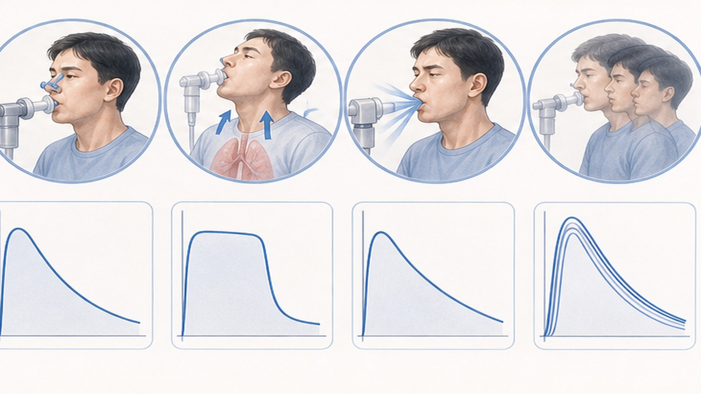
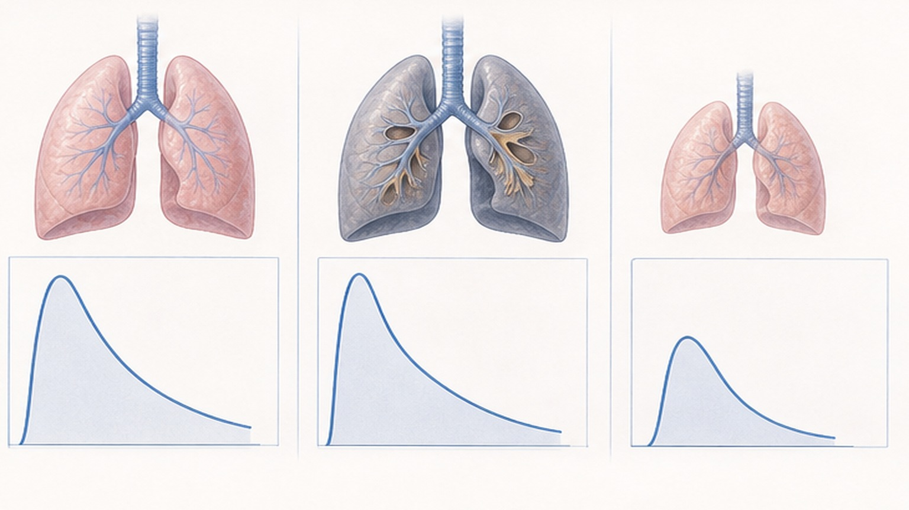
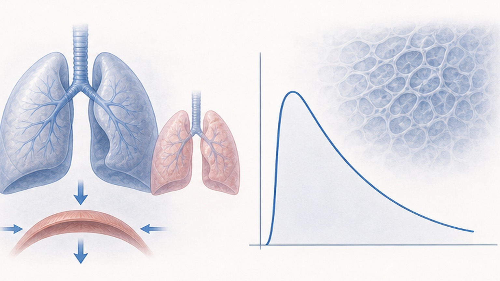

숫자 하나보다 ‘숫자들이 그리는 모양’이 진단 방향을 정합니다
얼마나 많이, 얼마나 빨리 — 최대로 들이마신 뒤 세게 끝까지 내쉴 때의 공기

각 숫자의 뜻과 정상 기준 — 우리 병원은 ‘정상 하한(LLN)’을 z 점수로 계산해 판정합니다
| 숫자 | 무슨 뜻인가요 | 정상으로 보는 기준 |
|---|---|---|
| FVC · 폐활량 | 끝까지 내쉰 총량 — 폐가 작아지면 가장 먼저 줄어듭니다 | 정상 하한 이상 |
| FEV1 · 1초량 | 1초 동안 내쉰 양 — 좁아진 기도의 정도를 봅니다 | 정상 하한 이상 |
| FEV1/FVC · 1초율 | 1초량이 폐활량에서 차지하는 비율 | 정상 하한 이상 (0.70은 함께 참고) |
| PEF · 최고 속도 | 내쉬기 시작 직후 가장 빠른 속도 — 노력에 따라 크게 달라집니다 | 천식의 하루 변동을 볼 때 씁니다 |
| z 점수 · 정상 하한 | 나와 같은 나이·키·성별의 정상인과 비교한 값 | z −1.645보다 낮으면 정상 하한 미만 |
정상 · 폐쇄성(좁아진 기도) · 제한성(작아진 폐) — 둘이 함께면 혼합형

1초율이 기준보다 낮으면 폐쇄성입니다
폐활량 검사로는 ‘의심’까지이고, 확진은 폐용적 검사로 합니다

같은 ‘1초량 감소’라도 1초율과 폐활량의 방향이 모양을 정합니다
첫 단계를 건너뛰면 나머지 해석이 모두 틀릴 수 있습니다
검사자가 ‘한 번 더’를 부탁하는 이유 — 숫자가 실제와 달라지기 때문입니다
QR로 다시 보기 · 검사 전 준비(담배는 1시간 전부터 끊기 등)는 검사 안내문을 드립니다